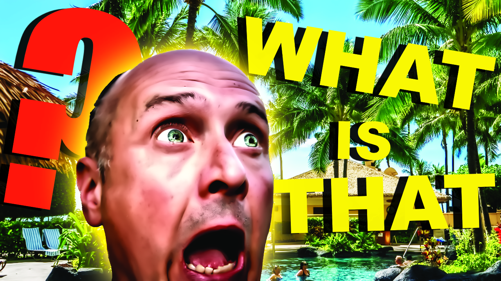
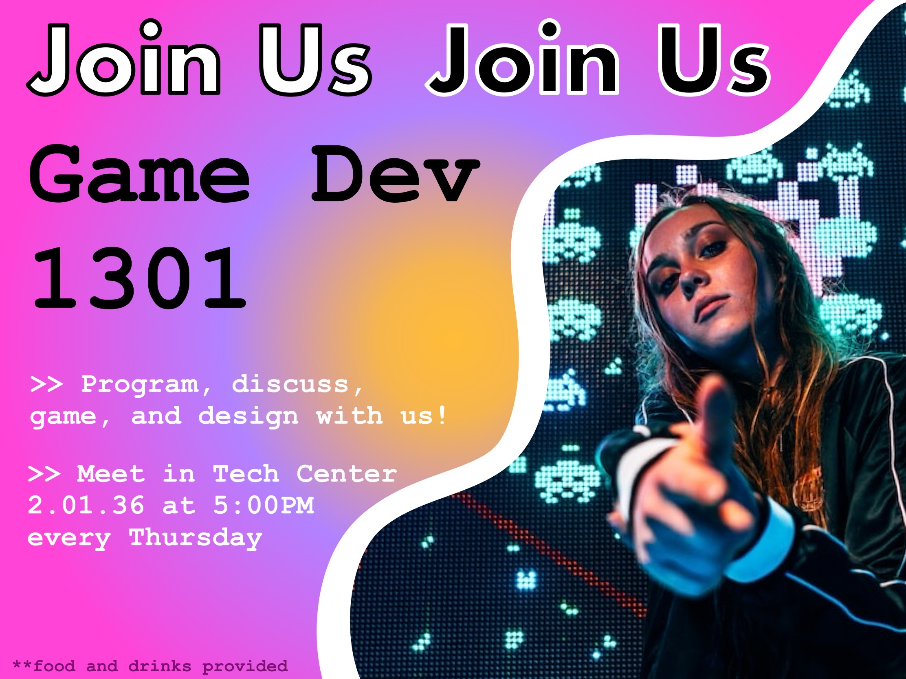
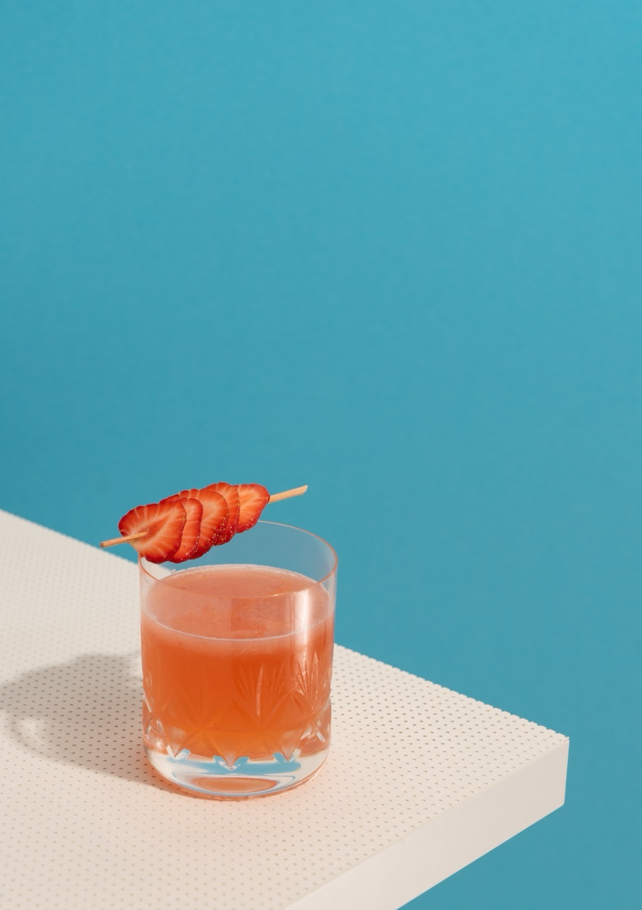
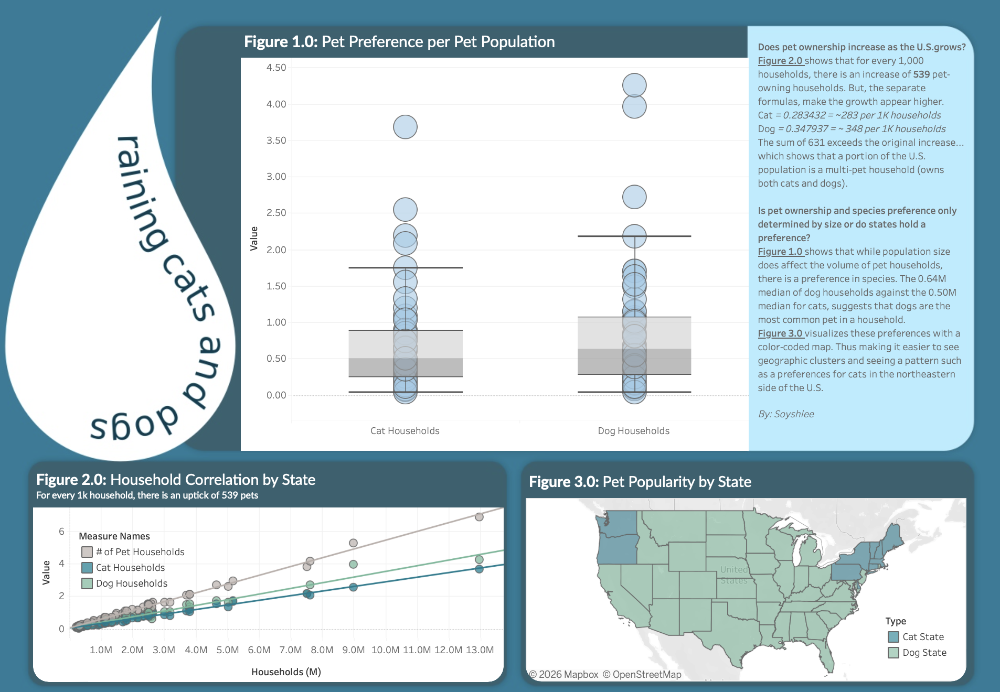
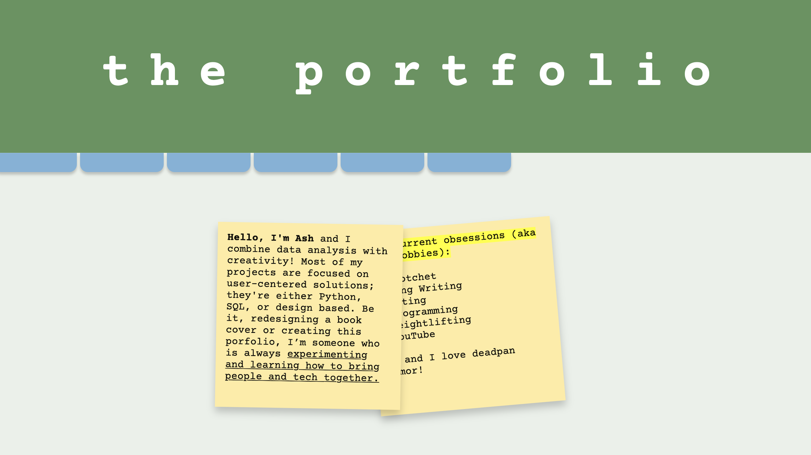

DIGITAL
RESUME,
INCONLINE PORTFOLIO
Hi! I'm Ash and I love finding patterns and demonstrating them in creative ways 📊 🎨
My goal is to be able to combine my admiration for ux design with my talent for data analysis; because of this, most of my projects are created on a pathos-based mindset with the user as a primary focus.
I often utilize Python, SQL, Figma, and Vector Graphic Design Software in these projects. You can check out my skills tab to see what other skills I use when I have a wide range of skills that I can use to from something as easy as redesigning a book cover to training an AI model. I’m someone who is always experimenting and learning how to bring people and tech together.
My current obsessions (aka my hobbies):
- Crocheting
- Songwriting
- Acting
- Programming
- Weightlifting
- Content Creation
oh and I love deadpan humor!
About Me

What a curious cat! My A4 sheet wasn't enough so you had to look through my office supplies. Well...
if you haven't guessed already, this portfolio is based on the Office (not the UK version, never
the UK
version). Why?
〰〰〰〰〰〰〰〰〰〰〰〰〰〰
Because I wanted my
portfolio to showcase who I am and since this show makes up about 40% of my humor, I figured
it would be a great theme to do. Also, this photo is my favorite photo. It's one of the very few times my
hair
is cooperating and I'm wearing my favorite brown overalls. It also helped that I got to eat many
strawberries 🍓 this day.
〰〰〰〰〰〰〰〰〰〰〰〰〰〰〰〰〰〰〰〰〰〰〰〰〰〰〰〰〰
Now enough about me. Tell me about yourself... do you like bears, beets, or Battlestar
Galactica?
This includes all my creative projects. Which mostly consist of photo editing, video editng, vector graphic design, ux design, and content creation. Enjoy!
App Recreation


I recreated my favorite (and most used) applications with vector graphic design software such as, Adobe Illustrator
Clickbait Thumbnail

I decided to practice making click-bait thumbnails as I kept seeing these type of thumbnails rise in popularity amongst YouTube content creators
Club Invite

I designed a university extracurricular invitation for a game development group.
Advertisement Glow-up


I turned a regular image into a modernized advertisement utilizing internet slang that was popular at the time. I would like to note that on the next version, I plan on re-coloring it to make it pop more.
Hello from Thailand

A more personal project of mine, where I created post-cards for the places I've traveled to. It's a great way for me to productively reminisce.
Movie Ticket

Something about that old technicolor trailer we all know -- the one with the dancing refreshments and popcorn bucket -- or those old vintage movie posters where the colors popped in all the right places. I wanted to make something that gave me that same other-world experience.
DiDi Movie Poster

I'm an avid cinema watcher so I designed a movie poster for DiDi, a coming-of-age movie that made me cry (but in a good way).
This includes all my technical projects. Which mostly consist of web design and data analysis with Figma, Tableau, SQL, Python, and Jupyter. Enjoy!
Exploring Entertainment

This analysis explores Netflix’s media catalog and uncovers patterns in genre distribution, release strategies, and content priorities. Read more here.
Raining Cats and Dogs

I created a Tableau dashboard that analyzed the patterns between population growth and pet ownership in the U.S. You can explore the dashboard by clicking here.
"The Office" Inspired Online Portfolio

I challenged myself to create my own online portfolio. This was a fun project that challenged me to utilize Figma to design and HTML/CSS/Javascript to create the layout of my website. Explore more with the repository by clicking here.
Funguy Game Development and Asset Creation


Here I coded, designed, and created 2-D game assets for a collaborative fungi inspired Unity game called, "Not a Fun Guy".